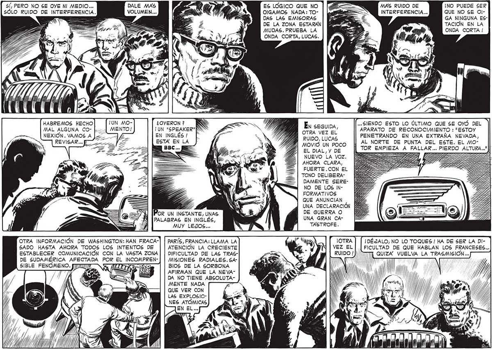

S[, PERO NO SE OYE NI MEDIO... SÓLO RUIDO DE INTERFERENCIA. Y N HABREMOS HECHO MAL ALGUNA CONEXION. VAMOS A DALE MAS VOLUMEN... ¿OYERON? Ki ¡UN "SPEAKER" EN INGLÉS ! ESTA EN LA POR UN INSTANTE, UNAS PALABRAS EN INGLÉS, MUY LEJOS... OTRA INFORMACIÓN DE WASHINGTON: HAN FRACA-| | PARÍS, FRANCIA: LLAMA LA SADO HASTA AHORA TODOS LOS INTENTOS DE ESTABLECER COMUNICACIÓN CON LA VASTA ZONA DE SUDAMERICA AFECTADA POR EL INCOMPRENSIBLE FENOMENO. [7277 ATENCIÓN LA CRECIENTE DIFICULTAD DE LAS TRASMISIONES RADIALES. SABIOS DE LA SORBONA AFIRMAN QUE LA NEVA” DA NO TIENE ABSOLUTAMENTE NADA re QUE VER CON ES LÓGICO QUE NO OIGAMOS NADA: TODAS LAS EMISORAS DE LA ZONA ESTARÁN MUDAS. PRUEBA LA ONDA CORTA, LUCAS. Én SEGUIDA, OTRA VEZ EL Í RUIDO. LUCAS MOVIÓ UN POCO EL DIAL,Y DE NUEVO LA VOZ. AHORA CLARA, FUERTE .CON EL TONO DELIBERADAMENTE SERENO DE LOS INFORMATIVOS QUE ANUNCIAN | UNA DECLARACIÓN DE GUERRA O UNA GRAN CATASTROFE. MAS RUIDO DE INTERFERENCIA... ¡NO PUEDE SER QUE NO SE OlGA NINGUNA ESTACIÓN EN LA ONDA CORTA ! ... SIENDO ESTO LO ÚLTIMO QUE $E OYÓ DEL APARATO DE RECONOCIMIENTO : "ESTOY PENETRANDO EN UNA EXTRAÑA NEVADA, AL NORTE DE PUNTA DEL ESTE. EL MOTOR EMPIEZA A FALLAR... PIERDO ALTURA..." ll ¡DÉJALO, NO LO TOQUES ! HA DE SER LA DI(FICULTAD DE QUE HABLAN LOS FRANCESES... TM QUIZA” VUELVA LA TRASMISION... INT // A / M 27 Ur” rn / Pe mm SY ' / Ny /) /j ) 7 y IN
